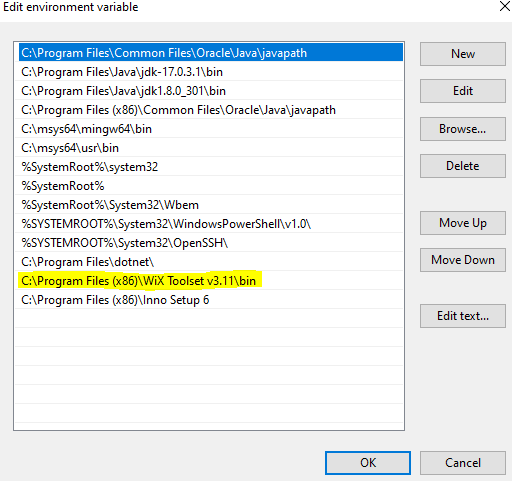

Java 17 includes a packaging tool for your programs so users can install them on their PC. To package a program in a Windows installer first install the wix toolkit.opens in new window
Add the Wix Toolkit bin folder to the system path.
To use the packaging tool open the command prompt and navigate to your project folder. Enter the following command for a list of packaging options:
jpackage -h
The most basic installer can be built with the following command: (replace Demo with the name of your jar file.)
jpackage --input dist --main-jar Demo.jar --type exe
The installer will appear in the project folder as an .exe file.
Video demonstrationThe jpackage tool does not come with a GUI but one can be implemented with Java Swing. Write a swing program that allows the user to create an installer for their Java program. This program will allow the user to fillout or select the following options:
- Select the jar file to be packaged. Use the JFileChooser.
- Select an icon for the program. Use the JfileChooser and show the icon name after it is selected.
- A checkbox to allow the end-user (one who installs the program) to select the path for installation.
- A checkbox to create a desktop shortcut (default selected)
- A checkbox to create a start menu shortcut (default not selected)
- A JTextField to enter the version number
- A JTextArea to write a description for the program
- A name for the application
- A place to enter the vendor’s name
- A place to enter a copyright for the application
Arrange the components neatly in a single window. Use a custom color scheme for your packaging tool. There are some example color schemes here: https://coolors.coopens in new window Change the icon to a custom image that represents your application. Label all inputs. Provide a JLabel that indicates the status of the packaging operation so the user knows when the package is complete. Examples values may be “standing by”, “packaging...” and “complete”. Use try/catch blocks to prevent your program from crashing if the user enters bad or incomplete information.
System commands can be executed in Windows using:
String s = “Command string”;
Runtime.getRuntime().exec(s);
To view the results of the executed process, an InputStream must be read from the process. Here is some example code you can use:
try {
String s = "jpackage --input dist --main-jar Demo.jar --type exe";
Process p = Runtime.getRuntime().exec(s);
BufferedReader in = new BufferedReader(new InputStreamReader(p.getInputStream()));
String line = "";
while ((line = in.readLine()) != null) {
System.out.println(line);
}
p.waitFor(); //blocks the thread until the process is done.
System.out.println("Done waiting");
}
catch (Exception x) {
x.printStackTrace();
}
Practice using the jpackage tool from the command prompt until you are comfortable with it before trying to implement it in your swing app. Test your program thoroughly with different option combinations. Only submit your Netbeans project, do not submit any installers.
Submission rules:
Your project’s name must include your name, example: JohnDoeExam1
You must use the Java naming convention.
Turn in your work as a zipped Netbeans project.